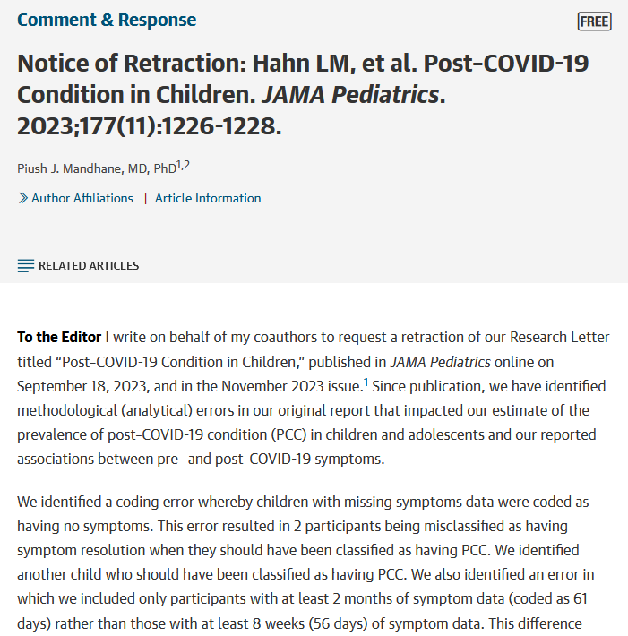

Lec 1: What is statistical inference?
BIOS 600 - Spring 2025
As you walk in…
Today, we’ll “collect” some data from the class and record it in a file you can access at the link below
How many hours of sleep did you get last night? If you feel comfortable sharing, please type in a number corresponding to the number of hours of sleep you got. Round to the nearest hour.
We’ll come back to this later in class.
Reading
No reading for today.
Announcements
Thanks for all your wonderful introductions on Ed Discussion!
Your first lab will be this afternoon in this room from 3:30-4:50
Lab 1 and Zoom recording of the lab has been posted and will be due Friday at 11:59 pm
Fill out the Getting to Know You Survey (linked on Canvas homepage) by tomorrow at 11:59pm.
Announcements (cont)
Tutoring is available (starting Jan 20) and this will include office hours for each of the 3 tutors
- Jose Lopez
- Wenqing Zhu
- Molly Hoch
More information next week once we identify the best times for office hours
Reach out to me or the TAs if you need assistance outside of the Lab time or my office hours 9:45-10:45 Thursday
- Abby Foes — agfoes@unc.edu
- Alex Akushevich — aku@unc.edu
Assistance from TAs is available by appointment (to start)
Reminder: Please do utilize Ed Discussion whenpossible for questions
What is statistical inference (in a biostatistics context)?
A process that converts data into useful information, whereby practitioners
- form a question of interest
- collect and summarize data
- and interpret the results
Identifying the population and question of interest
The population is the group we’d like to learn something about:
What is the prevalence of diabetes among U.S. adults, and has it changed over time?
Is there a relationship between tumor type and five-year mortality in breast cancer patients?
Does the average amount of caffeine vary by vendor in 12 oz cups of coffee at UNC coffee shops?
If we had data from every unit in the population, we could just calculate what we wanted and be done!
Sampling from the population
Unfortunately, we (usually) have to settle with a sample from the population.
- Ideally, the sample is representative, allowing us to use probability and statistical inference to make conclusions that are generalizable to the broader population of interest.
Our Sleep Data
Based on our collective histogram, get in groups of 4 and discuss the following:
What is our population?
What is our sample?
What does our sample show? Do we think it’s representative of our population? Why or why not?
What limitations might we have? (How could we improve?)
Sampling methods
Probability sampling (e.g., simple random sampling, stratified, cluster, or multi-stage sampling)
All units have a known chance of being selected
More likely to be generalizable
Can be more expensive and time-consuming
Non-probability sampling (e.g. quota, convenience, or snowball sampling)
Some units unable to be selected, with no way of knowing size or effect of sampling errors
Less generalizable to population of interest
More convenient and less costly
Study design
Experimental studies (e.g. randomized control trials (RCTs))
Researchers directly control exposures or treatment groups.
Ability to make causal statements
Less real-world applicability and generalizability
Observational studies (e.g. surveys)
Researchers do not assign exposures or treatments
Real-world setting with lower burden on participants
Inability to prove causality
Example
Study: The effect of a new diet on weight loss in adults
Objective: To determine whether a new low-carbohydrate diet leads to significant weight loss compared to a standard diet in adults.
Study Design:
- Participants: 100 adults aged 25-45 with a BMI between 25 and 30
- Randomization: Participants are randomly assigned to one of two groups:
- Group A: 50 participants following the new low-carb diet
- Group B: 50 participants following a standard diet.
- Intervention: Group A follows the new diet for 12 weeks, while Group B follows their usual diet (standard diet)
- Outcome measurement: Weight of participants is measured before the study begins and after 12 weeks.
Example
In small groups, discuss the following:
- Is this study an observational or experimental study? Why?
What can go wrong?
Depending on the study design and sampling methods, different types of bias occur (again, we don’t have the full population, only a sample).
Examples include:
- Selection bias: sample does not accurately reflect target population
- Reporting bias: tendency to under-report all information available
- Many more: non-response bias, attrition bias, confounding, detection bias, lack of blinding, straight-up falsified data (this happens)…and more!

A few years ago…

seroprevalence = level of pathogen in a population
From Conclusion: “The estimated prevalence of SARS-CoV-2 antibodies in Santa Clara County implies that COVID-19 was likely more widespread than indicated by the number of cases in late March, 2020”.
However…

Three main issues brought up in blog
- Sampling bias
Study recruited participants through Facebook ads, may have attracted people more concerned about COVID-19 or those who thought they were already exposed \(\rightarrow\) overestimation of seroprevalence (level of pathogen in a population)
Symptomatic/exposed individuals may have signed up to get tested, especially when testing was limited.
Participants may have recruited others in their network
Without a truly random sample, findings are less generalizable and reproducible
The issues, continued
- Statistical adjustments: High false positive rate could drive results
Study had high false positive rate (2 FP out of 401 known negative samples, about 0.5%), but with a wide confidence interval! (FP Rate could be above 1.2%)
Study reported only 50 positives out of ~3300 participants, so such a high FP rate could account for a significant portion - if not all - of the positive results. (\(\frac{2}{401}\cdot 3300 = 17\)) Yikes!
It could even be more! (re-calibrate the assay on a different set of 401 known negative samples, you may get 0/401 FP or even 6/401).
The issues, continued
- Transparency
Study does not make its raw data, code, and full methodology publicly available
Without access to these, other researchers cannot replicate the study or verify its findings, undermining the reproducibility of the research
Transparency essential for the scientific process (particularly in high-stakes studies!)
Reproducibility and replicability
Reproducibility: being able to take original data and code to reproduce all numerical findings.
Replicability: being able to independently repeat an entire study without use of the original data (generally with the same methods)
Best practices from the American Statistical Association:
End-to-end scripting of research
From the moment you “read in” your raw data, document the code you used for data cleaning, visualization, and analysis
Use of version control and documentation (we will not use this in our class)
Publication of code along with data
The current replication crisis

- misconduct, including image manipulation

- submitting falsified data to secure federal research grants
Fraudulent data can lead to unreliable research findings, waste resources, and erode trust in scientific integrity!
Replication and Transparency as a Path to Self-Correction
Sharing code and data can help identify even accidental mistakes

What is biostatistics good for?
📊 Turning Data Into Insight
Biostatistics helps us move beyond raw numbers to identify meaningful patterns in health and disease.🧪 Evaluating Interventions
From vaccines to health policies, biostatistics allows us to rigorously test what really works.🌍 Promoting Health Equity
Careful analysis helps uncover disparities in health outcomes and guide solutions for underserved communities.🔮 Forecasting & Prevention
Models help us anticipate outbreaks, chronic disease trends, and the impact of prevention strategies.🏥 Improving Patient Care
Biostatistics drives evidence-based medicine by connecting research to better clinical decisions.
What is biostatistics good for?
- When we appropriately apply statistical inference methods, they can do a lot of good!

What is biostatistics good for?

What is biostatistics good for?

Activity: Biostatistics for public good!
Step 1: Explore Google Scholar
- Search for a research paper where biostatistics is used to improve public health (e.g., studies on vaccines, health disparities, chronic disease prevention, environmental exposures, health policy).
Step 2: Share & Discuss
Form groups of 3. Each person shares the paper they found. As a group, discuss:
What is the paper studying? How are biostatistics being applied? Why is this meaningful or impactful for public health?
Participation
Step 3: Reflect & Submit
Take a screenshot of the abstract/front page of your chosen paper
Write a short reflection (3–4 sentences):
What do you find interesting/important about the paper you chose?
How does it show the value of biostatistics?
Submit the screenshot + reflection on Canvas
Due this Friday at 11:59pm
In this course, we will…
- Apply descriptive techniques commonly used to summarize public health data.
- Learn methods to analyze real-world data to answer research questions in a biomedical setting.
- Use Quarto within RStudio (now Posit) to write reproducible reports.
- Reading in data, cleaning data, visualization, analysis, interpretation
- Communicate results from statistical analyses to a general audience.
Recap
What is (bio)statistical inference?
Identifying the population of interest
Sampling types and biases
Reproducibility crisis: falsifying data
Biostatistics for public good!
Next class
- Probability Basics